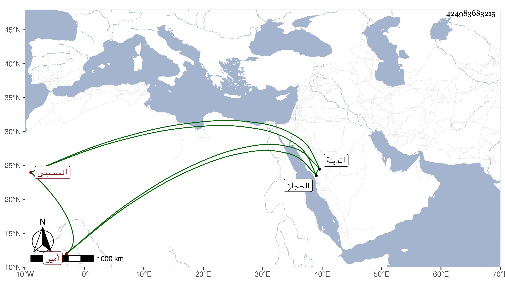

0902Sakhawi.DawLamic.ITO20230111-ara1.EIS1600.424983683215
Biography ID: 424983683215
886
زبيري اسم بلفظ النسب ابن قيس بن ثابت بن نعير بن منصور الحسيني أمير المدينة . وليها بعد ابن عمه ميان بن مانع في رمضان سنة أربع وخمسين وأقام بها إلى سنة خمس وستين فانفصل بزهير بن سليمان بن هبة بن جماز بن منصور ثم استقر به الشريف محمد بن بركات المفوض إليه أمر الحجاز بأسره في النيابة في جمادى الأولى سنة سبع وثمانين وخطب باسمهما . وحضر عندي بعض المجالس واستمر حتى مات في التي تليها واستقر الشريف بولده البدر حسن الماضي .
